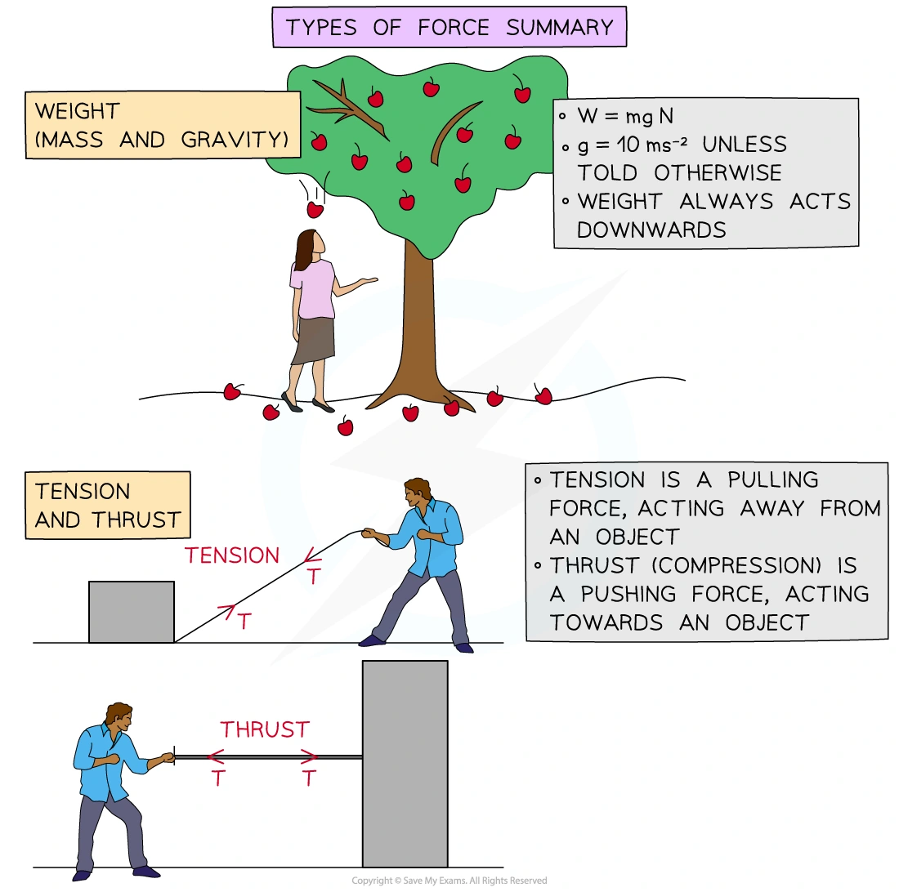
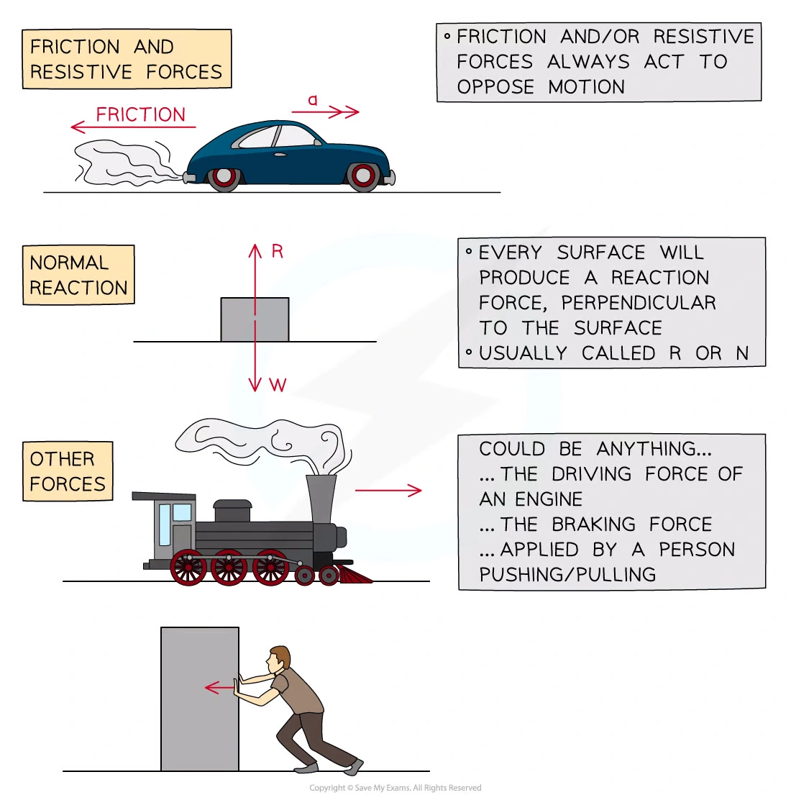
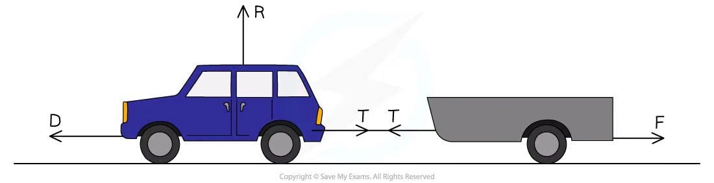
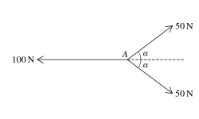
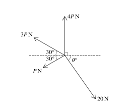
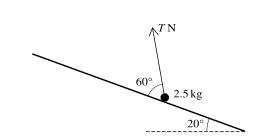
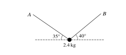
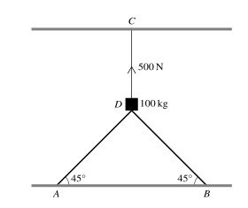
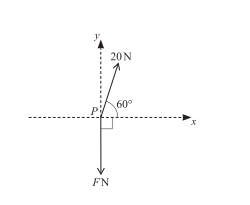
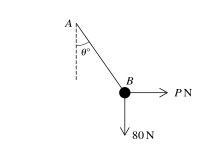

1. Forces and equilibrium
Force diagrams · components · friction · equilibrium
本页依据 9709 Mathematics 2026–2027 syllabus 4.1，覆盖：
- identify the forces acting in a given situation，并画出 force diagram；
- 理解 force 的 vector nature，求 components 和 resultants；
- particle in equilibrium 时，所有 force 的 vector sum 为 zero，等价于各方向分量和为 zero；
- 将 contact force 分解为 normal component 与 frictional component；
- smooth contact 模型及其限制；
- limiting friction、limiting equilibrium、coefficient of friction，以及 F\le\mu R 或 F=\mu R；
- Newton’s third law。
本页严格按考纲 4.1 组织；Newton’s laws 的动力学应用留在 Paper 4 后续章节。
Learning objectives
1. Core knowledge
Force diagram and standard models
对 particle 逐一列出所有外力：
W=mg\quad\text{(weight, vertically downward)}.
接触面产生 normal reaction R，方向垂直于接触面。粗糙面还产生 friction F，方向反对相对运动或相对运动趋势；光滑面不产生 friction。
light string 的 tension 沿 string、方向 away from the particle；light rigid rod 可以提供 tension 或 thrust；smooth pulley 只改变 string 的方向，理想模型中 string 两侧 tension 相等。
所有数值题取 g=10\,\mathrm{m\,s^{-2}}，除非题目另有说明。
Worked example · Types of force

Worked example · Friction and normal reaction

Components and resultants
If a force F makes angle \theta with the positive horizontal direction, then
F_x=F\cos\theta,\qquad F_y=F\sin\theta.
For equilibrium, resolve in two convenient perpendicular directions:
\sum F_x=0,\qquad \sum F_y=0.
For a resultant with components X and Y,
|\mathbf R|=\sqrt{X^2+Y^2},\qquad \tan\alpha=\frac{Y}{X},
with the quadrant checked from the signs of X and Y.
Worked example · Contact force components

Friction and limiting equilibrium
For a rough contact,
0\le F\le\mu R.
At limiting equilibrium, the particle is just about to move and
F=\mu R.
On an inclined plane at angle \alpha, if the applied force has no component perpendicular to the plane,
R=mg\cos\alpha,qquad mg\sin\alpha\text{ acts down the line of greatest slope}.
If a force P is applied at angle \beta above the plane, then its components are P\cos\beta along the plane and P\sin\beta away from the plane:
R=mg\cos\alpha-P\sin\beta.
Worked example · Modelling assumptions
Two blocks, A and B are attached by means of a light inextensible string running over a smooth pulley. Block A has mass 0.7 kg and is accelerating along a smooth horizontal surface, block B has a mass 0.2 kg. Both A and B are modelled as particles. State how the following modelling assumptions can be used in your calculations:
- A and B are both particles.
- The string is light.
- The string is inextensible.
- The pulley is smooth.
- The surface A is moving along is smooth.
Newton’s third law
When two bodies interact, the force exerted by A on B and the force exerted by B on A are equal in magnitude and opposite in direction. They act on different bodies, so they must not be cancelled on one particle’s force diagram.
2. Verified Paper 4 questions
Question 1 · 9709/41/M/J/20 Q1

Three coplanar forces of magnitudes 100\,\mathrm N, 50\,\mathrm N and 50\,\mathrm N act at a point A, as shown in the diagram. The value of \cos\alpha is \frac45.
Find the magnitude of the resultant of the three forces and state its direction. [3]
Show detailed mark scheme answer
The vertical components of the two 50\,\mathrm N forces cancel. Their horizontal resultant is
2(50\cos\alpha)=100\cdot\frac45=80\,\mathrm N
to the right. Combining this with the 100\,\mathrm N force to the left gives
R=100-80=20\,\mathrm N.
Therefore the resultant is
\boxed{20\,\mathrm N\text{ to the left}}.Question 2 · 9709/41/M/J/20 Q4(a–b)
The diagram shows a ring of mass 0.1\,\mathrm{kg} threaded on a fixed horizontal rod. The rod is rough and the coefficient of friction is 0.8. A force of magnitude T\,\mathrm N acts on the ring at 30^\circ to the rod, downwards in the vertical plane containing the rod. Initially the ring is at rest.
Find the greatest value of T for which the ring remains at rest. [4]
Find the acceleration of the ring when T=3. [3]
Show detailed mark scheme answer
- The vertical equilibrium gives
R=1+T\sin30^\circ=1+\frac T2.
At the greatest value, friction is limiting:
T\cos30^\circ=0.8R=0.8\left(1+\frac T2\right).
Hence
T=\frac{0.8}{\cos30^\circ-0.4}=1.72\,\mathrm N\quad\text{(3 s.f.)}.
- When T=3,
R=1+3\sin30^\circ=2.5,\qquad F=0.8R=2.
The resultant horizontal force is 3\cos30^\circ-2=0.598\,\mathrm N. Therefore
a=\frac{0.598}{0.1}=\boxed{5.98\,\mathrm{m\,s^{-2}}}.Question 3 · 9709/42/M/J/20 Q2

Coplanar forces of magnitudes 20\,\mathrm N, P\,\mathrm N, 3P\,\mathrm N and 4P\,\mathrm N act at a point in the directions shown in the diagram. The system is in equilibrium.
Find P and \theta. [6]
Show detailed mark scheme answer
Resolving horizontally and vertically gives
20\cos\theta=4P\cos30^\circ,
and
4P+3P\sin30^\circ-P\sin30^\circ=20\sin\theta.
The second equation simplifies to 5P=20\sin\theta, so P=4\sin\theta. Substitution in the first equation gives
\tan\theta=\frac5{4\sqrt3}.
Therefore
\boxed{\theta=35.8^\circ,\qquad P=2.34\,\mathrm N}\quad\text{(3 s.f.).}Question 4 · 9709/42/M/J/20 Q3

A particle of mass 2.5\,\mathrm{kg} is held in equilibrium on a rough plane inclined at 20^\circ to the horizontal by a force of magnitude T\,\mathrm N making an angle of 60^\circ with a line of greatest slope of the plane. The coefficient of friction between the particle and the plane is 0.3.
Find the greatest and least possible values of T. [8]
Show detailed mark scheme answer
Resolve perpendicular to the plane:
R=25\cos20^\circ-T\sin60^\circ.
For the greatest T, friction acts down the plane:
T\cos60^\circ=25\sin20^\circ+0.3R.
This gives
\boxed{T=20.5\,\mathrm N}\quad\text{(3 s.f.).}
For the least T, friction acts up the plane:
T\cos60^\circ+0.3R=25\sin20^\circ,
giving
\boxed{T=6.26\,\mathrm N}\quad\text{(3 s.f.).}Question 5 · 9709/43/O/N/20 Q3(a–b)
A string is attached to a block of mass 4\,\mathrm{kg} which rests in limiting equilibrium on a rough horizontal table. The string makes an angle of 24^\circ above the horizontal and the tension in the string is 30\,\mathrm N.
Draw a diagram showing all the forces acting on the block. [1]
Find the coefficient of friction between the block and the table. [5]
Show detailed mark scheme answer
The force diagram contains weight 40\,\mathrm N downward, reaction R upward, tension 30\,\mathrm N at 24^\circ above the horizontal, and limiting friction opposing the horizontal component of the tension.
Vertical equilibrium gives
R+30\sin24^\circ=40 \Longrightarrow R=27.8\,\mathrm N.
At limiting equilibrium,
\mu R=30\cos24^\circ.
Therefore
\boxed{\mu=\frac{30\cos24^\circ}{40-30\sin24^\circ}=0.985}\quad\text{(3 s.f.).}Question 6 · 9709/42/O/N/20 Q3
A block of mass m\,\mathrm{kg} is held in equilibrium below a horizontal ceiling by two strings. One string is inclined at 45^\circ to the horizontal and has tension T\,\mathrm N. The other string is inclined at 60^\circ to the horizontal and has tension 20\,\mathrm N.
Find T and m. [5]
Show detailed mark scheme answer
Horizontal equilibrium gives
T\cos45^\circ=20\cos60^\circ \Longrightarrow T=10\sqrt2\,\mathrm N.
Vertical equilibrium gives
T\sin45^\circ+20\sin60^\circ=10m.
Hence
\boxed{T=14.1\,\mathrm N,\qquad m=2.73\,\mathrm{kg}}\quad\text{(3 s.f.).}Question 7 · 9709/41/O/N/21 Q4(a–b)
A particle of mass 12\,\mathrm{kg} is stationary on a rough plane inclined at 25^\circ to the horizontal. A force of magnitude P\,\mathrm N acting parallel to a line of greatest slope is used to prevent the particle sliding down the plane. The coefficient of friction is 0.35.
Draw a sketch showing the forces acting on the particle. [1]
Find the least possible value of P. [5]
Show detailed mark scheme answer
The force diagram has weight 120\,\mathrm N vertically downward, reaction R perpendicular to the plane, P up the plane, and friction up the plane at the limiting case for the least P.
Since P has no perpendicular component,
R=120\cos25^\circ.
At the least value, friction is limiting and acts up the plane:
P+0.35R=120\sin25^\circ.
Therefore
\boxed{P=120\sin25^\circ-0.35(120\cos25^\circ)=12.6\,\mathrm N}.Question 8 · 9709/41/O/N/23 Q2

A particle of mass 2.4\,\mathrm{kg} is held in equilibrium by two light inextensible strings, one attached to A and the other to B. The strings make angles of 35^\circ and 40^\circ with the horizontal.
Find the tension in each string. [5]
Show detailed mark scheme answer
Let T_A be the tension in the string at 35^\circ and T_B the tension in the string at 40^\circ.
T_A\cos35^\circ=T_B\cos40^\circ,
T_A\sin35^\circ+T_B\sin40^\circ=24.
Solving these simultaneous equations gives
T_A=19.0336\ldots,\qquad T_B=20.3532\ldots
Therefore
\boxed{T_A=19.0\,\mathrm N,\qquad T_B=20.4\,\mathrm N}\quad\text{(3 s.f.).}Question 9 · 9709/42/F/M/23 Q5(a)

The diagram shows a block D of mass 100\,\mathrm{kg} supported by two sloping struts AD and BD, each attached at 45^\circ to fixed points on a horizontal floor. The block is also held in place by a vertical rope CD. The tension in CD is 500\,\mathrm N and the block rests in equilibrium.
- Find the magnitude of the force in each of the struts AD and BD. [3]
Show detailed mark scheme answer
The weight is 1000\,\mathrm N downward and the rope provides 500\,\mathrm N upward, so the two struts provide a total upward component of 500\,\mathrm N.
By symmetry, if the force in each strut is S,
2S\sin45^\circ=500.
Hence
\boxed{S=353.6\,\mathrm N}\quad\text{(3 s.f.).}Question 10 · 9709/43/O/N/23 Q3(a–c)
A block of mass 8\,\mathrm{kg} slides down a rough plane inclined at 30^\circ to the horizontal, starting from rest. The coefficient of friction between the block and the plane is \mu. The block accelerates uniformly down the plane at 2.4\,\mathrm{m\,s^{-2}}.
Draw a diagram showing the forces acting on the block. [1]
Find the value of \mu. [4]
Find the speed of the block after it has moved 3\,\mathrm m down the plane. [1]
Show detailed mark scheme answer
The forces are weight 80\,\mathrm N downwards, normal reaction perpendicular to the plane, and friction up the plane.
Resolving down the plane,
80\sin30^\circ-\mu(80\cos30^\circ)=8(2.4).
Thus
\mu=\frac{40-19.2}{80\cos30^\circ}=\boxed{0.300}\quad\text{(3 s.f.).}
- Using v^2=u^2+2as,
v^2=2(2.4)(3)=14.4,
so \boxed{v=3.79\,\mathrm{m\,s^{-1}}}.Question 11 · 9709/41/M/J/24 Q2(a–b)

Two forces of magnitudes 20\,\mathrm N and F\,\mathrm N act at a point P in the directions shown in the diagram.
Given that the resultant force has no component in the y-direction, calculate F. [2]
Given instead that F=10, find the magnitude and direction of the resultant force. [5]
Show detailed mark scheme answer
- The 20\,\mathrm N force has downward component 20\sin60^\circ, while the other force has upward component F. Therefore
F=20\sin60^\circ=\boxed{10\sqrt3\,\mathrm N}.
- When F=10, the components of the resultant are
R_x=20\cos60^\circ=10,\qquad R_y=10-20\sin60^\circ=10-10\sqrt3.
Hence
|R|=\sqrt{10^2+(10-10\sqrt3)^2}=\boxed{10.7\,\mathrm N}.
The direction is below the positive x-axis, with
\tan\phi=\frac{10\sqrt3-10}{10}=\sqrt3-1,
so \boxed{\phi=36.2^\circ\text{ below the positive }x\text{-axis}}.PastPaper/2024/2024/A-Level-CAIE数学QP-202406-Mathematics-P41-A-Level题库大全小程序.pdf, Q2(a–b), and matching mark scheme. The diagram is an independently extracted SVG; it is not a screenshot.
Question 12 · 9709/43/O/N/23 Q5(a–b)

A light string AB is fixed at A and has a particle of weight 80\,\mathrm N attached at B. A horizontal force of magnitude P\,\mathrm N is applied at B so that the string makes an angle \theta with the vertical.
It is given that P=32 and the system is in equilibrium. Find the tension in the string and the value of \theta. [4]
It is given instead that the tension in the string is 120\,\mathrm N and that the particle still has weight 80\,\mathrm N. Find P and \theta. [4]
Show detailed mark scheme answer
T\cos\theta=80,\qquad T\sin\theta=32.
Therefore
\boxed{T=16\sqrt{29}=86.1\,\mathrm N,\qquad \theta=21.8^\circ}.
P^2+80^2=120^2,
so
\boxed{P=40\sqrt5=89.4\,\mathrm N}.
Also \cos\theta=80/120=2/3, giving
\boxed{\theta=48.2^\circ}.